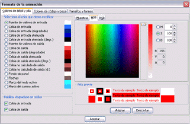
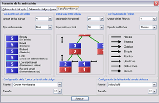

|
Existe total flexibilidad a la hora de dar formato a los datos que se muestran en la visualización. Por un lado, a través de la opción Configuración / Formato tipográfico se pueden aplicar distintos colores y formatos a las celdas de los valores de los parámetros de entrada y a las de los valores de salida. La primera pestaña está dedicada a la configuración del modo 1 de coloreado. Las celdas quedan diferenciadas en todos los nodos del árbol en función de si muestran valores de entrada o de salida. La segunda pestaña configura el modo 2, que colorea de diferentes colores los nodos que pertenecen a métodos distintos. La tercera pestaña gestiona la configuración de los elementos comunes: flechas, marcos de los nodos, fondos de los paneles, etc. La cuarta de las pestañas, orientada a tamaños, formas y fuentes, ofrece la posibilidad de elegir un borde para las celdas, el ancho de los marcos para el nodo activo y los nodos que forman parte de la rama actual en expansión, la distancia entre las celdas del árbol recursivo, el tipo de flecha utilizado o el ancho de la misma. |
 |
En esta cuarta pestaña también se puede configurar de manera independiente la fuente que se utiliza en las vistas de código y traza en cuanto a tipografía y tamaño (el color se puede graduar en pestañas anteriores).
Los cambios van teniendo efecto según se van seleccionando los distintos parámetros configurables y asignando los colores deseados.
__________
3.2. Ocultación de datos históricos y subllamadas - 3.4. Zoom y visor de navegación